<title>PuhuScribe Design So Far</title>
<meta name="claude:viewport-fit-sides" content="cover">
<link rel="preconnect" href="https://fonts.googleapis.com">
<link rel="preconnect" href="https://fonts.gstatic.com" crossorigin>
<link rel="stylesheet" href="https://fonts.googleapis.com/css2?family=Geist:wght@500;600&family=Lexend:wght@300;400;500&display=swap">
<style>
  /* Layout: one reading column for the words, wider rows for the screenshots, which wrap to one column on a phone. */
  :root {
    --bg: #f6f5fa;
    --surface: #ffffff;
    --fg: #1b1a20;
    --muted: #56525e;
    --violet: #6b46c1;
    --teal: #1f7c8e;
    --edge: rgba(26, 22, 52, 0.08);
    --shadow: 0 1px 2px rgba(26, 22, 52, 0.05), 0 10px 30px rgba(26, 22, 52, 0.07);
    --font-head: "Geist", ui-sans-serif, system-ui, sans-serif;
    --font-body: "Lexend", ui-sans-serif, system-ui, sans-serif;
  }
  @media (prefers-color-scheme: dark) {
    :root:not([data-theme="light"]) {
      --bg: #121117; --surface: #1c1b23; --fg: #f2f0f8; --muted: #b8b4c4;
      --violet: #a78bea; --teal: #4fb3c4; --edge: rgba(255, 255, 255, 0.08); --shadow: none; color-scheme: dark;
    }
  }
  :root[data-theme="dark"] {
    --bg: #121117; --surface: #1c1b23; --fg: #f2f0f8; --muted: #b8b4c4;
    --violet: #a78bea; --teal: #4fb3c4; --edge: rgba(255, 255, 255, 0.08); --shadow: none; color-scheme: dark;
  }
  body { background: var(--bg); color: var(--fg); font: 300 16px/1.65 var(--font-body); }
  main {
    max-width: 1120px; margin: 0 auto;
    padding-left: max(16px, env(safe-area-inset-left, 0px));
    padding-right: max(16px, env(safe-area-inset-right, 0px));
    padding-block: 48px 80px;
    display: grid; gap: 64px;
  }
  h1, h2, h3 { font-family: var(--font-head); font-weight: 600; letter-spacing: -0.02em; margin: 0; text-wrap: balance; }
  h1 { font-size: clamp(30px, 5vw, 44px); line-height: 1.1; }
  h2 { font-size: 26px; line-height: 1.2; }
  h3 { font-size: 18px; letter-spacing: -0.01em; }
  p { margin: 0; }
  strong { font-weight: 500; }
  section { display: grid; gap: 20px; }
  .lead { display: grid; gap: 14px; max-width: 68ch; }
  .lead p, .text p { color: var(--muted); }
  .lead p strong, .text p strong { color: var(--fg); }
  .text { display: grid; gap: 12px; max-width: 68ch; }

  .three { display: grid; grid-template-columns: repeat(3, minmax(0, 1fr)); gap: 20px; }
  @media (max-width: 860px) { .three { grid-template-columns: 1fr; } }
  .explain { background: var(--surface); border-radius: 18px; padding: 22px; display: grid; gap: 8px; box-shadow: var(--shadow); min-width: 0; }
  .explain p { color: var(--muted); font-size: 15px; }
  .explain a { color: var(--violet); font-weight: 500; text-underline-offset: 3px; }

  .shots { display: flex; flex-wrap: wrap; gap: 24px; align-items: flex-start; }
  figure { margin: 0; display: grid; gap: 10px; min-width: 0; }
  .phone-shot { width: 270px; max-width: 100%; }
  .phone-shot img { border-radius: 28px; box-shadow: var(--shadow); border: 1px solid var(--edge); display: block; width: 100%; height: auto; }
  figcaption { font-size: 14px; color: var(--muted); max-width: 32ch; }
  figcaption strong { color: var(--fg); }

  .parts { display: grid; grid-template-columns: repeat(3, minmax(0, 1fr)); gap: 28px; }
  @media (max-width: 960px) { .parts { grid-template-columns: repeat(2, minmax(0, 1fr)); } }
  @media (max-width: 620px) { .parts { grid-template-columns: 1fr; } }
  .part img { width: 100%; height: auto; display: block; border-radius: 16px; border: 1px solid var(--edge); box-shadow: var(--shadow); background: #ffffff; }
  .part figcaption { max-width: none; }

  .brand { display: flex; flex-wrap: wrap; gap: 36px; align-items: flex-end; }
  .brand figure { justify-items: start; }
  .tile { background: #ffffff; border-radius: 20px; padding: 22px; display: grid; place-items: center; border: 1px solid var(--edge); }
  .tile img { display: block; }

  .changes { display: grid; gap: 10px; max-width: 72ch; padding-left: 20px; margin: 0; }
  .changes li { color: var(--muted); }
  .changes li strong { color: var(--fg); }

  .choose { background: var(--surface); border-radius: 22px; padding: 28px; display: grid; gap: 16px; box-shadow: var(--shadow); max-width: 76ch; }
  .choose ul { margin: 0; padding-left: 20px; display: grid; gap: 10px; }
  .choose li { color: var(--muted); }
  .choose li strong { color: var(--fg); }
  .reg-spoken { color: var(--teal); font-weight: 500; }
  .reg-written { color: var(--violet); font-weight: 500; }
  a:focus-visible { outline: 3px solid var(--violet); outline-offset: 3px; border-radius: 4px; }
</style>

<main>
  <section class="lead">
    <h1>Where PuhuScribe's design stands</h1>
    <p><strong>Job 5 made two things.</strong> The look (colours, fonts, background, icon) and the building blocks every screen is made from: buttons, the Finnish line, the play and record controls, the word card. It did not make the real lesson screens. Those come in the next jobs, put together from these blocks.</p>
    <p><strong>Approving job 5 means</strong> every future screen uses this look and these blocks. Any part can still change later, and you see every real screen before it ships.</p>
  </section>

  <section aria-labelledby="pieces-h">
    <h2 id="pieces-h">The three things you were shown, and how they fit</h2>
    <div class="three">
      <div class="explain">
        <h3>The "Hear it" sample</h3>
        <p>One real screen, put together from the blocks, so you can see how a lesson step will feel. It shows the first step of unit 1.</p>
        <p><a href="#sample-h">See it</a></p>
      </div>
      <div class="explain">
        <h3>The word card</h3>
        <p>One block. It is what opens when a learner taps a Finnish word: the word, which form it is and why, in both spoken and written Finnish.</p>
        <p><a href="#card-h">See it</a></p>
      </div>
      <div class="explain">
        <h3>The parts catalogue</h3>
        <p>Every block on one long page, in every state, for the builders and reviewers. That is why it looks like a list and not a screen. Learners never see it.</p>
        <p><a href="#parts-h">See it</a></p>
      </div>
    </div>
  </section>

  <section aria-labelledby="sample-h">
    <h2 id="sample-h">The sample screen, "Hear it"</h2>
    <div class="text">
      <p>Each line shows <span class="reg-spoken">spoken Finnish</span> on a teal band, with <span class="reg-written">written Finnish</span> under it, joined by the dotted line from v2. Words that change between the two are blue. When the audio plays, the word being spoken lights up in black. The Finnish is sample text still waiting for your reviewer.</p>
    </div>
    <div class="shots">
      <figure class="phone-shot">
        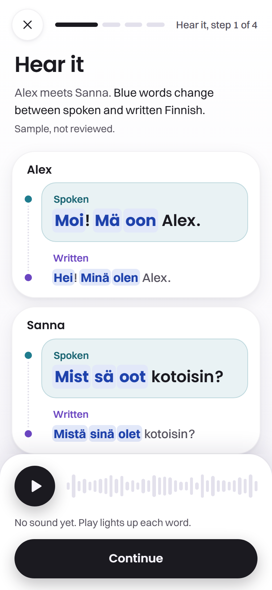
        <figcaption><strong>Before play.</strong> Two lines from Alex and Sanna, the player and Continue at the bottom.</figcaption>
      </figure>
      <figure class="phone-shot">
        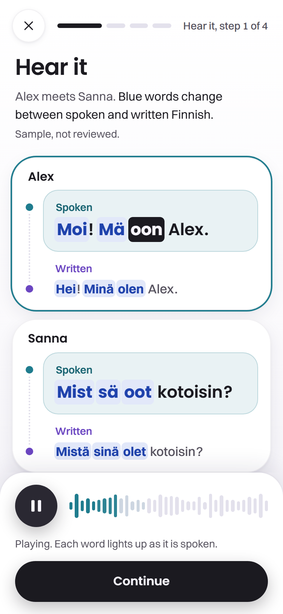
        <figcaption><strong>Playing.</strong> The word "oon" is being spoken, so it is lit. The waveform shows how far the audio has got.</figcaption>
      </figure>
      <figure class="phone-shot">
        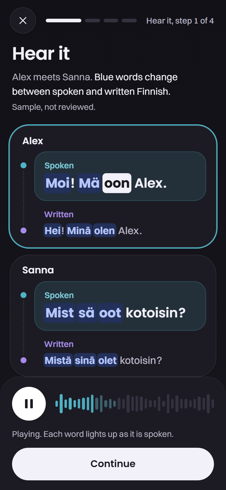
        <figcaption><strong>Dark mode.</strong> The same screen when the phone is set to dark.</figcaption>
      </figure>
    </div>
  </section>

  <section aria-labelledby="card-h">
    <h2 id="card-h">The word card</h2>
    <div class="text">
      <p>This is the screenshot that looked different. It is taken from the parts catalogue, where a Finnish line sits on its own with its card open. In a real lesson, a learner taps a word on the "Hear it" screen and this card slides up over it. It holds the grammar as a card behind a tap, never as a lesson.</p>
    </div>
    <div class="shots">
      <figure class="phone-shot">
        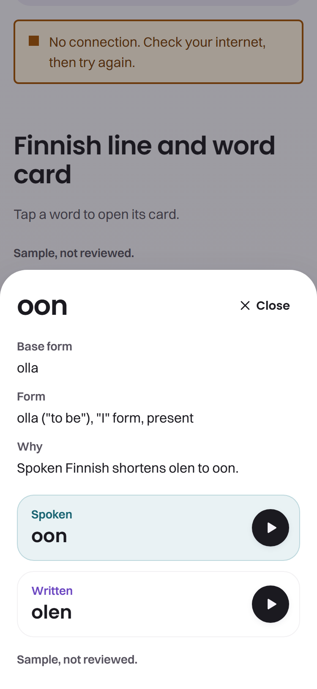
        <figcaption><strong>Light.</strong> The tapped word, its form and a one line reason, in both registers.</figcaption>
      </figure>
      <figure class="phone-shot">
        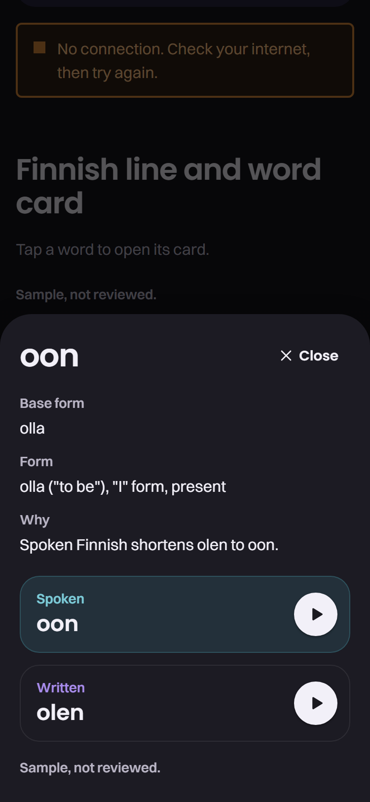
        <figcaption><strong>Dark.</strong> The same card in dark mode.</figcaption>
      </figure>
    </div>
  </section>

  <section aria-labelledby="parts-h">
    <h2 id="parts-h">The parts catalogue, in sections</h2>
    <div class="text">
      <p>The real catalogue is one very long page. Here it is cut into its main sections, each with what it is for.</p>
    </div>
    <div class="parts">
      <figure class="part">
        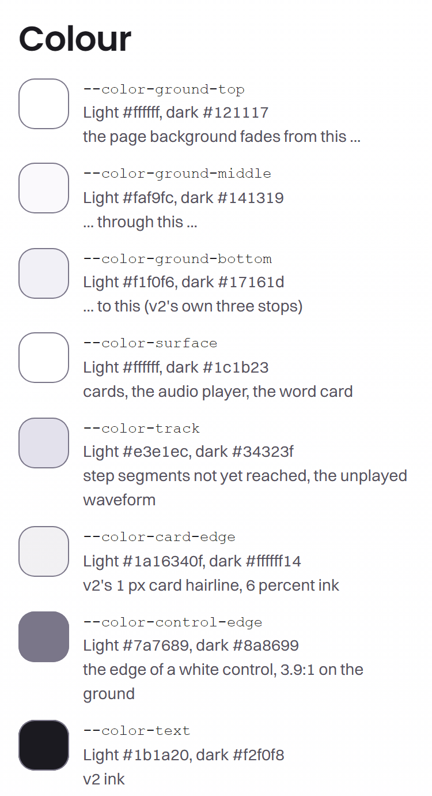
        <figcaption><strong>Colours.</strong> Every colour with its job and its light and dark value. Most come straight from v2.</figcaption>
      </figure>
      <figure class="part">
        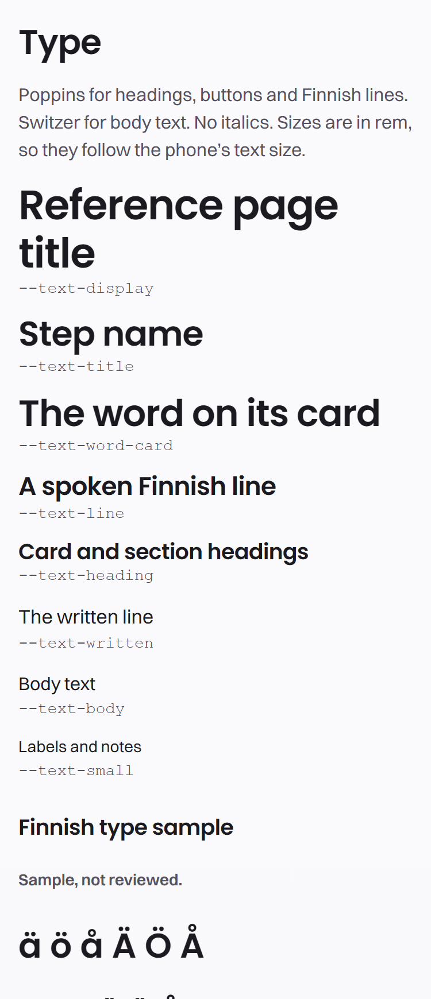
        <figcaption><strong>Text styles.</strong> Poppins for headings and Finnish lines, Switzer for body text, like v2. Sizes follow the phone's text setting.</figcaption>
      </figure>
      <figure class="part">
        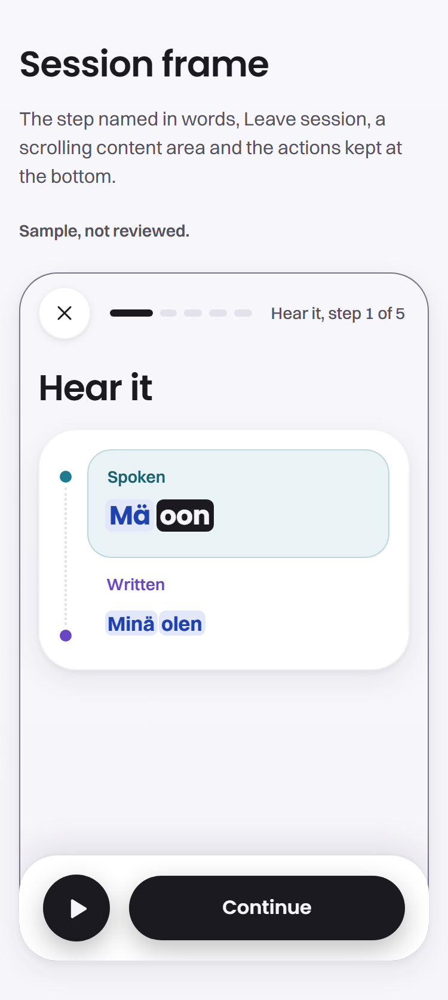
        <figcaption><strong>Session frame.</strong> The shell every lesson step sits in: leave button, step bar, content, and the controls kept at the bottom.</figcaption>
      </figure>
      <figure class="part">
        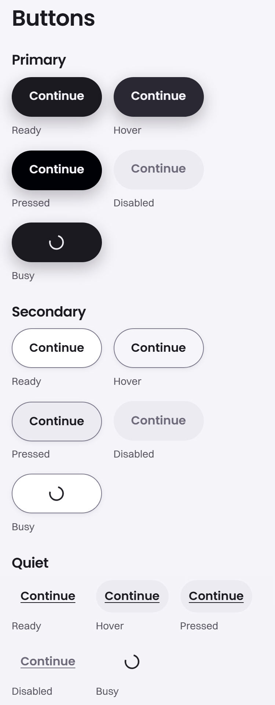
        <figcaption><strong>Buttons.</strong> The black pill from v2, a white pill and a quiet text button, each shown ready, pressed, disabled and busy.</figcaption>
      </figure>
      <figure class="part">
        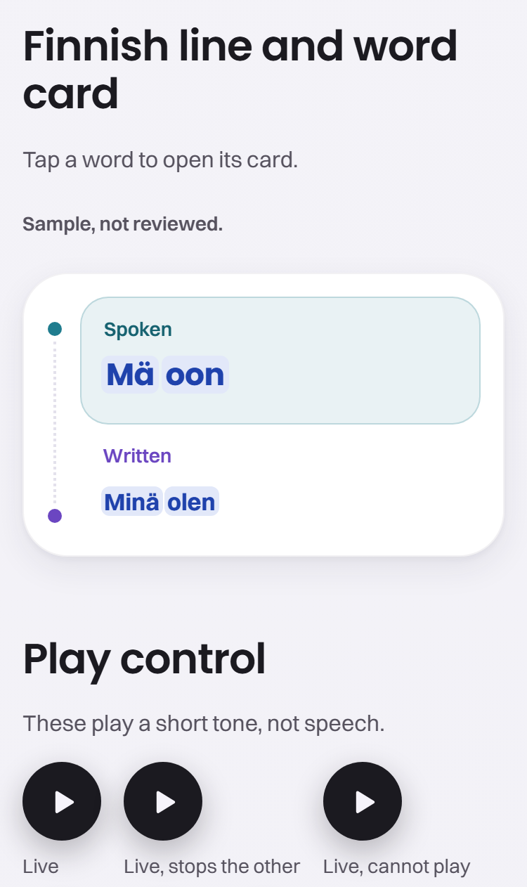
        <figcaption><strong>Finnish line and play control.</strong> One line in both registers, and the play button in each state, including "Try again" when audio cannot play.</figcaption>
      </figure>
      <figure class="part">
        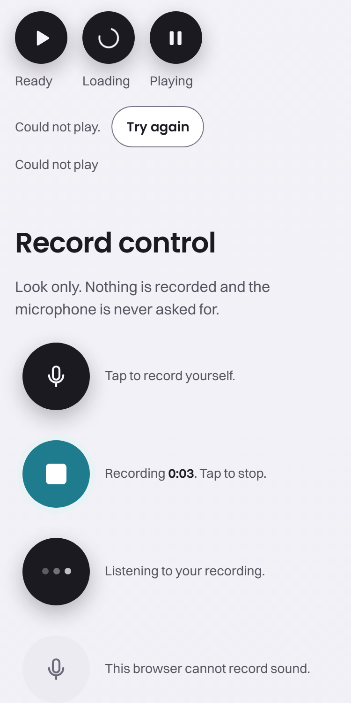
        <figcaption><strong>Record control and status line.</strong> Tap to record yourself, recording, listening back. Nothing records yet; the microphone comes in a later job.</figcaption>
      </figure>
    </div>
  </section>

  <section aria-labelledby="brand-h">
    <h2 id="brand-h">Icon and name mark</h2>
    <div class="text">
      <p>The new icon is v2's sprout, redrawn flat, because the glossy shine is on your banned list. The name mark keeps v2's "Puhu" dark and "Scribe" grey.</p>
    </div>
    <div class="brand">
      <figure>
        <div class="tile"></div>
        <figcaption><strong>v2 today.</strong> Glossy, with a shine on top.</figcaption>
      </figure>
      <figure>
        <div class="tile">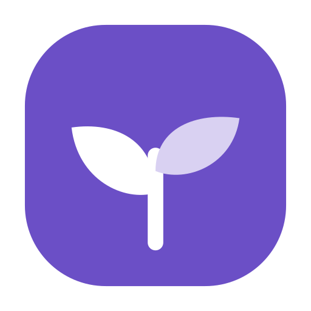</div>
        <figcaption><strong>New, flat.</strong> Same shape and colour, no shine.</figcaption>
      </figure>
      <figure>
        <div class="tile"></div>
        <figcaption><strong>Name mark.</strong> Used at the top of the app and on the landing page later.</figcaption>
      </figure>
    </div>
  </section>

  <section aria-labelledby="changes-h">
    <h2 id="changes-h">What changed from v2</h2>
    <ul class="changes">
      <li><strong>New.</strong> The word being spoken lights up, and the player has a large play button with a waveform.</li>
      <li><strong>Calmer.</strong> Blue highlights are only as tall as the text, and the spacing is more open.</li>
      <li><strong>Easier to read.</strong> The blue and teal text is a little darker, because v2's were too faint for comfortable reading. Backgrounds keep v2's colours.</li>
      <li><strong>Spoken first.</strong> Spoken Finnish now sits above written Finnish, as your principles say. v2 had them the other way round.</li>
      <li><strong>Plain labels.</strong> "Spoken" and "Written" in normal letters, where v2 used small capitals.</li>
      <li><strong>Kept from v2.</strong> The colours, both fonts, the white to lilac background, the paired dialogue card, the black pill buttons, the sprout.</li>
    </ul>
  </section>

  <section class="choose" aria-labelledby="choose-h">
    <h2 id="choose-h">What you can choose</h2>
    <ul>
      <li><strong>Approve as it is.</strong> Job 5 is merged and the next jobs build the real lesson screens from these blocks.</li>
      <li><strong>Approve with changes.</strong> Tell Claude what to change, for example the highlight colour, the button shape or the spacing. The builder adjusts it and you see it again first.</li>
      <li><strong>Rethink the look.</strong> Nothing is merged and we go back to the direction.</li>
      <li><strong>The icon.</strong> Use the new flat sprout, keep v2's glossy one, or decide later at the landing page job.</li>
    </ul>
  </section>
</main>
